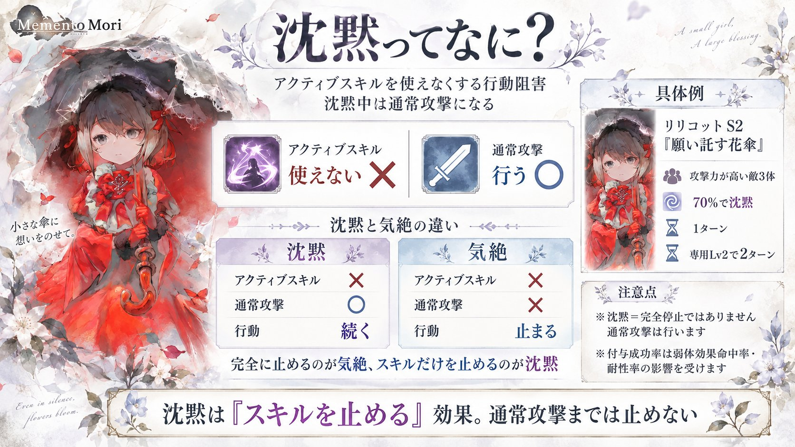

ひとことで
沈黙は、アクティブスキルを使えなくする行動阻害です。
沈黙中のキャラは行動不能になるわけではなく、アクティブスキルの代わりに通常攻撃を行います。

まず覚えること
沈黙＝「何もできない」ではありません。
スキルを封じて、通常攻撃に置き換える効果です。
沈黙すると何が起きる？
ゲーム内ヘルプでは、沈黙は行動阻害の1つとして扱われています（行動阻害は気絶・睡眠・混乱・沈黙・金縛りの5種）。沈黙中は次の状態になります。
- アクティブスキルを発動できない
- その行動では通常攻撃を行う
ヘルプで封じると書かれているのはアクティブスキルだけです。
気絶との違い
沈黙と気絶は似ていますが、止める範囲が違います。
| 効果 | アクティブスキル | 通常攻撃 | そのキャラの行動 |
|---|---|---|---|
| 沈黙 | 使えない | 行う | 続く |
| 気絶 | 使えない | できない | 終了 |
つまり、完全に止めるのが気絶、スキルだけを止めるのが沈黙と考えると分かりやすいです。
リリコットで見る沈黙
リリコットS2「願い託す花傘」は、沈黙の分かりやすい例です。攻撃時、攻撃力が高い敵3体に対して次の沈黙を付与します。
- 70%で沈黙
- 通常は1ターン
- 専用武器Lv2で2ターン
沈黙が成功すると、対象は次の行動でアクティブスキルを使えず、通常攻撃を行います。
「70%」は最終成功率70%とは限らない
ここは誤解しやすいポイントです。沈黙は弱体効果なので、スキルに「70%」と書かれていても、実際の付与成功率は弱体効果命中率・弱体効果耐性率の影響を受けます。ゲーム内ヘルプでも、弱体効果の付与はスキル固有の付与確率を基準に、命中率・耐性率を加減して最終確率を計算すると説明されています。
そのため、70%表記＝どんな相手にも70%で成功ではありません。
ワーズさんの弱体効果命中・耐性の検証でも、スキル固有の付与確率に命中・耐性の補正が加わる挙動が確認されています。
沈黙中でも通常攻撃はできる
沈黙は便利な妨害ですが、相手を完全に無力化する効果ではありません。沈黙中でも通常攻撃は行うため、通常攻撃を強化するキャラは沈黙中でも一定の火力を出せます。
リリコット自身もS4「想い刻む懐中時計」で通常攻撃が強化されているため、沈黙を受けても、通常攻撃だけのキャラより攻撃性能が残ります。
沈黙＝完全停止ではない
相手が通常攻撃強化を持っている場合は、スキルを封じても攻撃そのものは脅威として残ります。
沈黙を使うキャラ
現行キャラの中で、沈黙を付与するスキルは次のとおりです。確率はスキル表記の値で、実際の成功率は弱体効果命中率・耐性率で変わります。
| キャラ／スキル | 対象・条件 | 沈黙 |
|---|---|---|
| リリコット S2 願い託す花傘 | 攻撃力が高い敵3体 | 70%・1ターン。専用Lv2で2ターン |
| ステラ S1 カオス・スペル | HP割合が低い敵3体 | 20%・1ターン。対象の腕力が自身より低ければ40%。専用Lv1で40%／80% |
| ステラ S4 星を統べる者 | 防御力増加を再付与したとき、ランダムな敵5体 | 40%・2ターン。専用Lv2で80% |
| [聖なる漆黒の輝く星]ステラ S2 ファイナルステラ | 7ターン目以降、攻撃力が高い敵2体 | 70%・2ターン |
| ギルウィアル S1 惑いの夕闇 | 攻撃力が高い敵2体（バフ解除後、対象のHPが50%以上なら） | 20%・1ターン。対象の魔力が自身より低ければ40%。専用Lv1で30%／60% |
| ギルウィアル S2 スターダスト | ランダムな敵3体 | 40%・1ターン。専用Lv2で50% |
| ルナリンド S1 アイスコフィン | ランダムな敵5体のうち、クリティカルヒットした対象 | 確率の記載なし・1ターン。専用Lv2で3ターン |
| カロル S1 忘却の翅 | ランダムな敵3体 | 20%・1ターン。専用Lv1で35%、Lv2で55% |
| リシェス S2 突撃！とけねこ隊長 | ランダムな敵3体 | 55%・1ターン |
沈黙を防ぐ方法
沈黙は弱体効果・行動阻害なので、対応する無効効果で新しい付与を防げます。
沈黙無効
沈黙そのものを防ぎます。例：[錆鉄の空]A.A. S3「天使の残光」は、バトル開始時に攻撃力が高い味方3体へ1ターンの沈黙無効を付与します。
行動阻害無効
沈黙を含む行動阻害（気絶・睡眠・混乱・沈黙・金縛り）をまとめて防ぎます。例：フォルティナS3「聖剣の守護」は、ターン開始時に自身へ3ターン（発動後は4回行動するまで再発動しない）、自身以外で攻撃力が最も高い味方1体へ2ターンの行動阻害無効を付与します。
弱体効果無効
沈黙を含め、新しい弱体効果そのものを防ぎます。
すでに付いている沈黙は消えない
ゲーム内ヘルプでは、これらの無効効果は新しく付く効果を防ぐもので、すでに付帯している沈黙を解除するものではないと説明されています。
沈黙無効と行動阻害無効は完全に同じではない
どちらも沈黙対策として使えますが、ゲーム内部では完全に同じ効果として扱われない場合があります。
ワーズさんのトリクシー解説では、トリクシーのスキルの条件判定において行動阻害無効は対象になる一方、沈黙無効は同じ扱いにならないケースが確認されています。
そのため、このページでは次のように分けて扱います。
- 沈黙無効：沈黙に特化した無効
- 行動阻害無効：沈黙を含む行動阻害全体の無効
沈黙を繰り返してスキルを封じる使い方
沈黙は、長い効果ターンやスキルのクールタイム短縮と組み合わせることで、相手のアクティブスキルを長く使わせない運用もできます。
特にルナリンドS1「アイスコフィン」は、専用武器Lv2で沈黙が3ターンになるため、クールタイム短縮役と組み合わせて沈黙を繰り返す編成が考えられます。
ワーズさんのアイリーン解説でも、ルナリンドを中心にクールタイム短縮を組み合わせて沈黙を途切れさせない編成（沈黙ループ）が紹介されています。
ただし、これは沈黙そのものの共通仕様ではなく、キャラと編成を組み合わせた運用例です。
まとめ
沈黙は、相手のアクティブスキルを封じて通常攻撃に置き換える行動阻害です。見るべきポイントは次の4つです。
- 何ターン沈黙するか
- 誰を対象にするか
- 付与確率はいくつか
- 弱体効果命中・耐性を含めて実際に通るか
リリコットなら、攻撃力が高い敵3体 → 70%で沈黙 → 通常1ターン → 専用Lv2で2ターンという分かりやすい形です。
ただし、沈黙中でも通常攻撃は行うため、「スキルは止められるが、相手そのものが完全停止するわけではない」ことは覚えておくとよいです。
リリコットの使い方はワーズさん「キャラ性能解説 リリコット」でも詳しく解説されています。
出典
出典：ゲーム内ヘルプ／ゲーム内スキル説明
ゲーム内ヘルプの「弱体効果の種類（行動阻害）」「確率増加・減少」「弱体効果無効・行動阻害無効」を一次情報とし、各キャラの数値・発動条件はゲーム内スキル説明を基準にしています。
検証参考：ワーズさんが公開されている検証結果を参考にさせていただきました。
- ワーズさん「弱体効果命中と耐性2」スキル固有の付与確率と弱体効果命中・耐性の補正
- ワーズさん「キャラ性能解説 リリコット」リリコットの沈黙と通常攻撃強化
- ワーズさん「キャラ性能解説 アイリーン」ルナリンドを中心にクールタイム短縮で沈黙を維持する編成（沈黙ループ）
- ワーズさん「キャラ性能解説 トリクシー」スキルの条件判定で、行動阻害無効は対象になり沈黙無効は対象にならない例